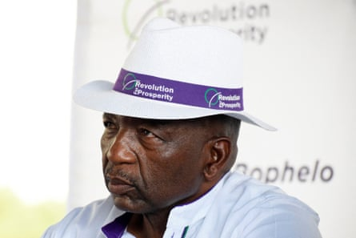

It took a single video complaining about Lesotho’s unemployment rate to turn Tšolo Thakeli into the prime minister’s enemy. Within a day of posting there were armed police at his door.
It was Father’s Day, and the 31-year-old father of two was in his pyjamas when they arrived. He had no idea his post would land him in trouble; after all, he had campaigned for a long time, under different governments, for action on jobs for young people.
But this month’s video by Thakeli, asking why the premier, Sam Matekane, had not delivered on a promise to create jobs, had struck a chord with young people, who began sharing and discussing the post online.
Initial attempts to charge him with insulting Matekane and inciting violence were abandoned due to lack of evidence. He was released but re-arrested the same day and charged with sedition.
“They just threw me into the holding cell. Here they are very bad: they’re very small, dark, dirty, stinking and it’s cold in there,” he said. He was held for two days. Thakeli was then summoned by Lesotho’s head of police and told to never mention the prime minister’s name again.
Lesotho’s prome minister, Sam Matekane.Photograph: Molise Molise/AFP/Getty Images
“The police commissioner said, ‘You can talk however you want, but never mention his name again, and we cannot guarantee you any protection should you go out there again and mention his name.’ He was basically saying should anything happen to me they would not do anything about it,” said Thakeli.
But Thakeli has ignored the warning. He said he has no choice but to keep speaking out and has continued with social media posts and videos that attract tens of thousands of viewers.
A public debate on youth joblessness was prompted recently when thousands of people turned up to an army recruitment drive seeking to fill 500 vacancies.
Maketane announced he would create 70,000 jobs in just three weeks. Thakeli’s video questioned the substance of this promise, highlighting that there was no provision for such job creation in a budget announced in February and asking why there had been no action in the three years since Maketane’s election.
Lesotho struggles with 16% unemployment , with the rate rising to 24% for young people , according to the World Bank. Thakeli, now a business owner, said he struggled to find a job after graduating as a lawyer.
He has long campaigned for action on unemployment, staging a one-man protest on the issue outside parliament in 2016, long before Maketane took office.
Thakeli’s arrest sparked protests in Lesotho’s capital, Maseru, but also concern among human rights activists in the wider southern African region over the attack on an individual expressing concern over basic social problems.
“These are questions any citizen should be asking about – for democracy, for society, they should be able to ask this. He’s not asking for the PM to be removed, he’s just asking the question. The response from the government is terrifying,” said Makomborero Haruzivishe, of the activist group Action for Southern Africa .
On social media, Thakeli uses humour and memes, including a picture of his lawyer looking unimpressed and captioned, “[the] face he makes every time I make a live video.”
But in reality he is concerned for his safety and that of his wife and daughters.
Now on bail, his lawyer has heard that the authorities are considering revoking it to force him to remain in custody before a trial on 2 July. Thakeli is baffled by being suddenly seen as a security threat.
“I’m a citizen of this country: the issues of concern to the people – they affect me. I know what we go through every day. The situation keeps deteriorating and nothing is being done about it; corruption scandals fill the headlines each week,” said Thakeli. “I’m not armed, I don’t belong to any organisation, I’m just a concerned individual who wants what’s best for my country and fellow citizens. I just want to hold my government accountable as that’s my duty as a citizen.”